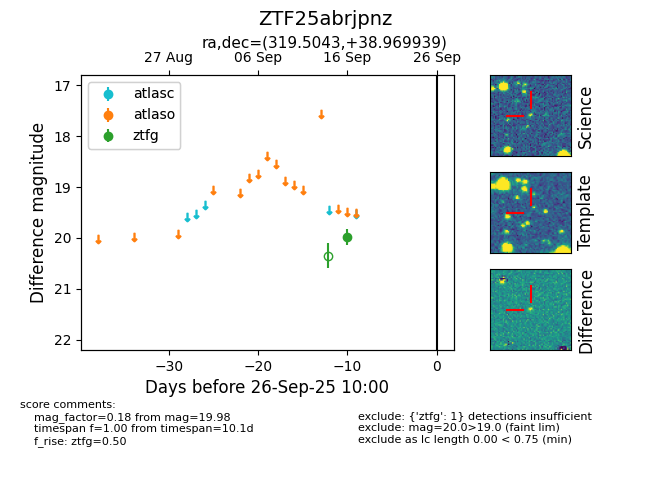

FINK: ZTF25abrjpnz
Lasair: ZTF25abrjpnz
ALeRCE: ZTF25abrjpnz
ZTF25abrjpnz (ztf,fink)
equatorial (ra, dec) = (319.5043,+38.96994)
galactic (l, b) = (83.9675,-7.25091)

last ztfg=19.98
1 ztfg detections